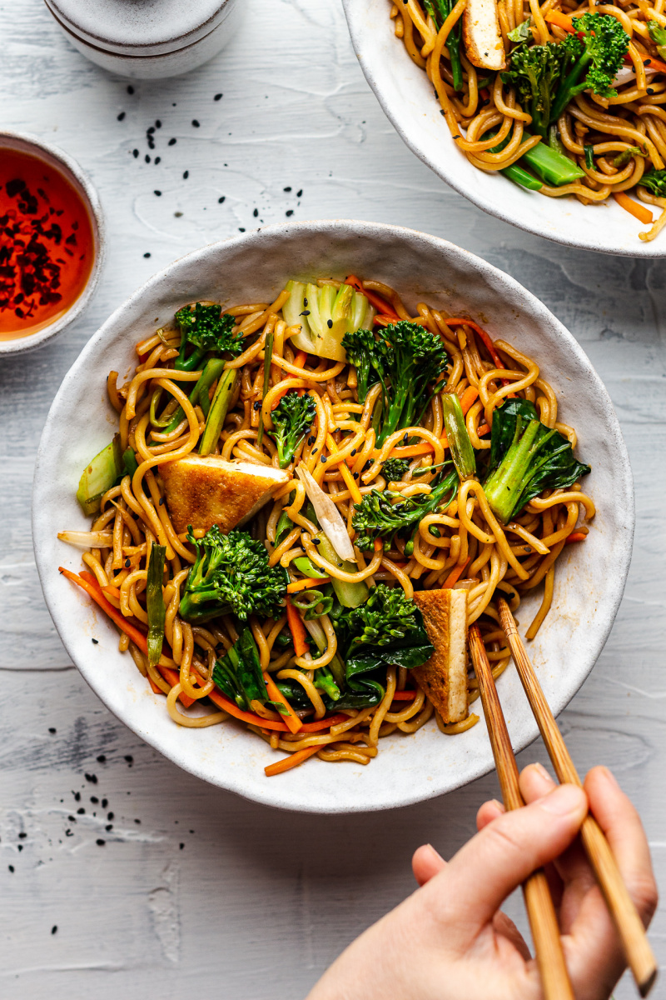

Quick Vegan Spring Onion Noodles
Quick Vegan Spring Onion Noodles

Preparation time: 10 min
Cook Time: 20 min
Serves: 2 to 3
Ingredients:
Sauce:
- 30 ml / 2 tbsp all purpose soy sauce, more to taste
- 10 ml / 2 tsp dark soy sauce (for colour)
- 5 ml / 1 tsp Sriracha (optional)
- 10 ml / 2 tsp maple syrup or sugar
- 10 ml / 2 tsp rice wine vinegar
Remaining Ingredients:
- 200 g / 7 oz pre-marinated tofu (optional)
- 100 g / 3½ oz tenderstem broccoli
- 1 bok choi
- 1 carrot
- 4 small spring onions / scallions
- 30 ml / 2 tbsp stir-fry oil (I use rice bran)
- 400 g / 14 oz pre-cooked noodles* (I used ramen)
Instructions:
-
Mix all the sauce ingredients together in a small bowl, set aside.
-
Prepare tofu (if using) like you normally would. I use pre-marinated shop-bought tofu, which I bake in a hot oven or flash fry in a hot skillet.
-
Cut thicker broccoli stems into half lengthwise and then into even, bite-size pieces. Cut bok choi leaves off and chop the white part into small pieces and julienne the carrot.
-
Put a large pot of water onto boil and grab a steaming basket. Once the water is boiling, place broccoli in the steaming basket. Steam for 4 minutes, next add in the white part of the bok choi and steam for a further 2 minutes, finally add in bok choi leaves and julienned carrot and steam for 1 minute.
- Cut the dark green part off the spring onions and save them for garnish. Halve the rest lengthwise and then chop into 2.5 cm / 1″ pieces.
- Heat up a wok or a deep frying pan. Add oil and warm it up gently. Once warm, add chopped spring onions. Allow them to cook gently in the shimmering oil for about 7 minutes. Make sure the heat is low so that the spring onions cook without turning golden.
- Using a flexible spatula, transfer spring onion oil into a small bowl. Return the work to the heat and add approximately 60 ml / ¼ cup of water to the wok. Place noodle nets in the wok. Allow them to sit in warm water for about 60 seconds, then flip to the other side and leave for another 60 seconds. Next, using a wooden spatula gently tease the noodles apart, they should start unravelling. Toss them in the wok a few times until the noodle strands separate.
- Pour spring onion oil back into the wok and toss the noodles in it. Next, mix in the sauce, steamed vegetables and tofu (if using). Stir-fry for 30 seconds, just to warm up.
- Divide between two bowls, garnish with sliced spring onion tops.
Return to Main Page